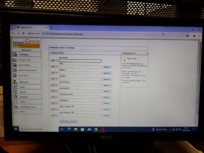

Project 1: Experiential learning at Lesotho College of Education
During my experiential learning I was doing automation which is the process of using technology, sofware or mechines to perform library process that include cataloguing or acquisition without human intervention, in the purpose of making access and retrieval easy. In this activity i was entering bibliographic details of every material to the library system and also allocating barcodes. First day of performing automation, I automated three books and edited four books, but later on as I gained more experience I was able to automate ten to eighteen books.
Another important activity was digitizing important and rear materials in the Institutional Repository and Archives where I was scanning important, fragile and rare library materials using a scanner and adding them to the IR stocktaking database. I was scanning documents, such as reports, graduation ceremony speeches, thesis and dissertations, calendars, policies, minutes, passed question papers and other rare library materials. I was able to scan and add to the database 10 copies per day.